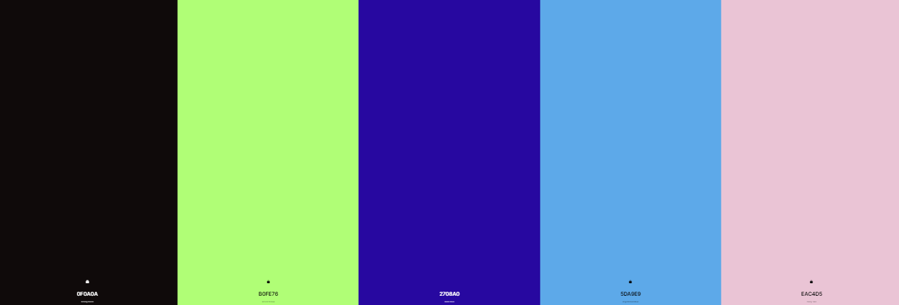

A escolha de cores se deve a procura de passar seriedade com o preto, confiança, segurança e tranquilidade com o azul, harmonia, criatividade e otimismo com o verde, e delicadeza e empatia com o rosa.
As imagens e icons escolhido se relacionam com as mais comuns profissões que utilizam jaleco, e a finalidade do site, juntamente com a mensagem de proteção.